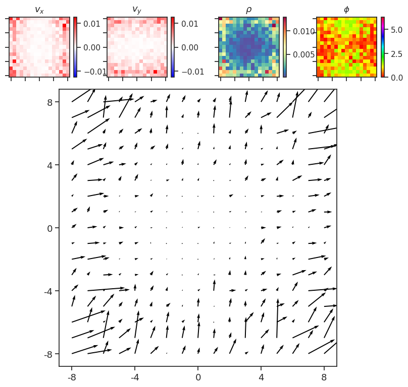

(15) PCA, NMF, Raw#
Motivation:
# HIDE CODE
import os, sys
from IPython.display import display
# tmp & extras dir
git_dir = os.path.join(os.environ['HOME'], 'Dropbox/git')
extras_dir = os.path.join(git_dir, 'jb-MTMST/_extras')
fig_base_dir = os.path.join(git_dir, 'jb-MTMST/figs')
tmp_dir = os.path.join(git_dir, 'jb-MTMST/tmp')
# GitHub
sys.path.insert(0, os.path.join(git_dir, '_MTMST'))
from vae.train_vae import TrainerVAE, ConfigTrainVAE
from vae.vae2d import VAE, ConfigVAE
from figures.fighelper import *
from analysis.glm import *
# warnings, tqdm, & style
warnings.filterwarnings('ignore', category=DeprecationWarning)
from rich.jupyter import print
%matplotlib inline
set_style()
from base.dataset import ROFLDS
from analysis.linear import compute_dci
label2latex = {
'fix_x': r'$F_x$',
'fix_y': r'$F_y$',
'slf_v_x': r'$V_{self, x}$',
'slf_v_y': r'$V_{self, y}$',
'slf_v_z': r'$V_{self, z}$',
'obj0_x': r'$X_{obj}$',
'obj0_y': r'$Y_{obj}$',
'obj0_z': r'$Z_{obj}$',
'obj0_v_x': r'$V_{obj, x}$',
'obj0_v_y': r'$V_{obj, y}$',
'obj0_v_z': r'$V_{obj, z}$',
}
pal_model, pal_cat = get_palette()
def compute_importances(
x: np.ndarray,
y: np.ndarray,
x_tst: np.ndarray,
y_tst: np.ndarray,
n_repeats: int = 5,
random_state: int = 0,
verbose: bool = True, ):
assert x.ndim == y.ndim == 2
assert x.shape[1] == x_tst.shape[1]
assert y.shape[1] == y_tst.shape[1]
shape = (y.shape[1], x.shape[1])
importances_mu = np.zeros(shape)
importances_sd = np.zeros(shape)
for i in tqdm(range(shape[0]), leave=not verbose):
_lr = sk_linear.LinearRegression().fit(x, g[:, i])
result = sk_inspect.permutation_importance(
estimator=_lr,
X=x_tst,
y=y_tst[:, i],
n_repeats=n_repeats,
random_state=random_state,
)
importances_mu[i] = result.importances_mean
importances_sd[i] = result.importances_std
return importances_mu, importances_sd
load dataset#
category = 'fixate1'
sim_path = f"/home/hadi/Documents/MTMST/data/{category}_dim-17_n-750k"
ds_trn = ROFLDS(sim_path, 'trn')
ds_vld = ROFLDS(sim_path, 'vld')
ds_tst = ROFLDS(sim_path, 'tst')
assert ds_trn.f + ds_trn.f_aux \
== ds_vld.f + ds_vld.f_aux \
== ds_tst.f + ds_tst.f_aux
# select main ground-truth variables
select_i, select_lbl = zip(*[
(i, lbl) for i, lbl in
enumerate(ds_trn.f + ds_trn.f_aux)
if lbl in label2latex
])
select_i = np.array(select_i)
select_lbl = list(select_lbl)
g = np.concatenate([ds_vld.g, ds_vld.g_aux], axis=1)[:, select_i]
g_tst = np.concatenate([ds_tst.g, ds_tst.g_aux], axis=1)[:, select_i]
PCA#
nf = 420
pca = sk_decomp.PCA(
n_components=nf,
svd_solver='full',
).fit(flatten_stim(ds_trn.x))
x = pca.transform(flatten_stim(ds_vld.x))
x_tst = pca.transform(flatten_stim(ds_tst.x))
lr = sk_linear.LinearRegression().fit(x, g)
r2 = sk_metric.r2_score(
y_true=g_tst,
y_pred=lr.predict(x_tst),
multioutput='raw_values',
)
# compute importances matrix
importances_mu, importances_sd = compute_importances(
x=x,
y=g,
x_tst=x_tst,
y_tst=g_tst,
)
w = np.maximum(0, importances_mu)
rho = w.sum(0) / w.sum()
d, c = compute_dci(w)
pca_results = {
'importances_mu': importances_mu,
'importances_sd': importances_sd,
'r2': r2,
'd': d,
'c': c,
'i': r2.mean(),
'dci': np.mean([d, c, r2.mean()]),
}
save_obj(
obj=pca_results,
file_name='pca_results',
save_dir=tmp_dir,
mode='npy'
);
[PROGRESS] 'pca_results.npy' saved at /home/hadi/Dropbox/git/jb-MTMST/tmp
pca_results
{'importances_mu': array([[ 1.90665043e-05, -5.08879864e-05, 6.75894468e-06, ...,
-8.86629204e-05, 1.75110730e-05, -4.92245118e-06],
[ 1.14071565e-05, 2.67893622e-05, -1.30911361e-04, ...,
-1.66929975e-05, 5.38865374e-06, 8.30637370e-06],
[-6.72876909e-05, 5.24298146e-01, 4.36874748e-01, ...,
9.45328083e-05, 7.78645143e-06, 3.55981454e-07],
...,
[-6.21337356e-06, 1.87067132e-02, 1.63329484e-02, ...,
5.69691308e-05, 1.24007402e-05, -2.97119740e-05],
[-2.53641564e-06, 1.53715932e-02, 1.83846102e-02, ...,
2.18179246e-06, 1.53779317e-05, 1.90729132e-05],
[ 5.51510979e-03, 1.32557767e-05, 8.17136115e-05, ...,
-1.40618693e-04, -5.69414041e-07, -6.98378040e-06]]),
'importances_sd': array([[2.00596595e-05, 2.56592229e-05, 1.03571476e-05, ...,
4.05966938e-05, 2.72717187e-06, 8.36564671e-06],
[7.67590124e-06, 1.09653119e-05, 5.06269734e-05, ...,
1.62804181e-05, 4.90009774e-06, 8.40907378e-06],
[2.08826975e-05, 2.27431682e-03, 1.93342227e-03, ...,
2.66778225e-05, 5.39967313e-06, 1.02050377e-05],
...,
[4.72373548e-06, 7.36205319e-04, 4.54696338e-04, ...,
2.94568713e-05, 1.48587528e-05, 1.62046319e-05],
[7.17124409e-07, 2.13273179e-04, 3.32687108e-04, ...,
1.89131905e-05, 1.14266206e-05, 6.47958535e-06],
[1.74404360e-04, 5.44888767e-06, 4.37139368e-05, ...,
4.31279125e-05, 5.45455121e-06, 5.90450453e-05]]),
'r2': array([-0.00650818, -0.00527431, 0.55987699, 0.56495145, 0.52101902,
-0.00273586, -0.00268859, -0.00718614, 0.46998505, 0.47200851,
0.03257805]),
'd': 0.7320381257223723,
'c': 0.5029313357355917,
'i': 0.23600236432270313,
'dci': 0.490323941926889}
plt.imshow(w / w.sum(0, keepdims=True), aspect=10)
<matplotlib.image.AxesImage at 0x7f86682bd640>
plt.imshow(w / w.sum(1, keepdims=True), aspect=10)
<matplotlib.image.AxesImage at 0x7f8661f8fb80>
plt.plot(rho)
[<matplotlib.lines.Line2D at 0x7f8661eef760>]
Raw#
df_i_r2_raw = []
df_dci_raw = collections.defaultdict(list)
# R^2
lr = sk_linear.LinearRegression().fit(
flatten_stim(ds_vld.x), g)
r2 = sk_metric.r2_score(
y_true=g_tst,
y_pred=lr.predict(flatten_stim(ds_tst.x)),
multioutput='raw_values',
)
nf = flatten_stim(ds_vld.x).shape[1]
df_i_r2_raw.append({
'model': ['RAW'] * len(r2),
'category': [category] * len(r2),
'beta': ['ae'] * len(r2),
'nf': [nf] * len(r2),
'f': select_lbl,
'r2': r2,
})
r2 = np.nanmean(r2)
df_dci_raw['i'].append(r2)
# compute importances matrix
importances_mu, importances_sd = compute_importances(
x=flatten_stim(ds_vld.x),
y=g,
x_tst=flatten_stim(ds_tst.x),
y_tst=g,
)
# DC
w = np.maximum(0, importances_mu)
rho = w.sum(0) / w.sum()
d, c = compute_dci(w)
df_dci_raw['model'].append('RAW')
df_dci_raw['category'].append(category)
df_dci_raw['beta'].append('ae')
df_dci_raw['nf'].append(nf)
df_dci_raw['d'].append(d)
df_dci_raw['c'].append(c)
df_dci_raw['dci'].append(np.mean([d, c, r2]))
df_dci_raw['rho_ent'].append(entropy_normalized(rho))
df_dci_raw = pd.DataFrame(df_dci_raw)
df_i_r2_raw = pd.DataFrame(merge_dicts(df_i_r2_raw))
plt.plot(rho)
[<matplotlib.lines.Line2D at 0x7f2e00daeee0>]
show_opticflow_full(rho.reshape(2, 17, 17));

(<Figure size 1000x900 with 9 Axes>,
array([<Axes: title={'center': '$v_x$'}>,
<Axes: title={'center': '$v_y$'}>,
<Axes: title={'center': '$\\rho$'}>,
<Axes: title={'center': '$\\phi$'}>, <Axes: >], dtype=object))
df_dci
| i | d | c | dci | rho_ent | |
|---|---|---|---|---|---|
| 0 | 23.458948 | 0.471353 | 0.203273 | 0.303072 | 0.919586 |
df_i_r2
| model | category | beta | nf | f | r2 | |
|---|---|---|---|---|---|---|
| 0 | RAW | fixate1 | ae | 578 | fix_x | -0.862515 |
| 1 | RAW | fixate1 | ae | 578 | fix_y | -0.811638 |
| 2 | RAW | fixate1 | ae | 578 | slf_v_x | 55.991183 |
| 3 | RAW | fixate1 | ae | 578 | slf_v_y | 56.498482 |
| 4 | RAW | fixate1 | ae | 578 | slf_v_z | 51.973174 |
| 5 | RAW | fixate1 | ae | 578 | obj0_x | -0.363107 |
| 6 | RAW | fixate1 | ae | 578 | obj0_y | -0.361998 |
| 7 | RAW | fixate1 | ae | 578 | obj0_z | -0.940251 |
| 8 | RAW | fixate1 | ae | 578 | obj0_v_x | 46.821294 |
| 9 | RAW | fixate1 | ae | 578 | obj0_v_y | 47.098742 |
| 10 | RAW | fixate1 | ae | 578 | obj0_v_z | 3.005062 |
lr = sk_linear.LinearRegression().fit(
flatten_stim(ds_vld.x), g)
r2 = sk_metric.r2_score(
y_true=g_tst,
y_pred=lr.predict(flatten_stim(ds_tst.x)),
multioutput='raw_values',
)
r2
array([-0.00862515, -0.00811638, 0.55991183, 0.56498482, 0.51973174,
-0.00363107, -0.00361998, -0.00940251, 0.46821294, 0.47098742,
0.03005062])
r2.mean()
0.2345894806866853
Decomposition#
nf = 420
PCA#
r2, np.mean(r2)
(array([-0.00650818, -0.00527431, 0.55987699, 0.56495145, 0.52101902,
-0.00273586, -0.00268859, -0.00718614, 0.46998505, 0.47200851,
0.03257805]),
0.23600236432270313)
NMF#
nmf = sk_decomp.NMF(
init='nndsvd',
random_state=0,
).fit(flatten_stim(sp_lin.norm(ds_trn.x, axis=1)))
/home/hadi/anaconda3/lib/python3.8/site-packages/sklearn/decomposition/_nmf.py:1090: ConvergenceWarning: Maximum number of iterations 200 reached. Increase it to improve convergence.
warnings.warn("Maximum number of iterations %d reached. Increase it to"
x = nmf.transform(flatten_stim(sp_lin.norm(ds_vld.x, axis=1)))
x_tst = nmf.transform(flatten_stim(sp_lin.norm(ds_tst.x, axis=1)))
---------------------------------------------------------------------------
KeyboardInterrupt Traceback (most recent call last)
Cell In[8], line 1
----> 1 x = nmf.transform(flatten_stim(sp_lin.norm(ds_vld.x, axis=1)))
2 x_tst = nmf.transform(flatten_stim(sp_lin.norm(ds_tst.x, axis=1)))
File ~/anaconda3/lib/python3.8/site-packages/sklearn/decomposition/_nmf.py:1364, in NMF.transform(self, X)
1359 X = self._validate_data(X, accept_sparse=('csr', 'csc'),
1360 dtype=[np.float64, np.float32],
1361 reset=False)
1363 with config_context(assume_finite=True):
-> 1364 W, _, n_iter_ = non_negative_factorization(
1365 X=X, W=None, H=self.components_,
1366 n_components=self.n_components_,
1367 init=self.init, update_H=False, solver=self.solver,
1368 beta_loss=self.beta_loss, tol=self.tol, max_iter=self.max_iter,
1369 alpha=self.alpha, l1_ratio=self.l1_ratio,
1370 regularization=self.regularization,
1371 random_state=self.random_state,
1372 verbose=self.verbose, shuffle=self.shuffle)
1374 return W
File ~/anaconda3/lib/python3.8/site-packages/sklearn/utils/validation.py:63, in _deprecate_positional_args.<locals>._inner_deprecate_positional_args.<locals>.inner_f(*args, **kwargs)
61 extra_args = len(args) - len(all_args)
62 if extra_args <= 0:
---> 63 return f(*args, **kwargs)
65 # extra_args > 0
66 args_msg = ['{}={}'.format(name, arg)
67 for name, arg in zip(kwonly_args[:extra_args],
68 args[-extra_args:])]
File ~/anaconda3/lib/python3.8/site-packages/sklearn/decomposition/_nmf.py:1073, in non_negative_factorization(X, W, H, n_components, init, update_H, solver, beta_loss, tol, max_iter, alpha, l1_ratio, regularization, random_state, verbose, shuffle)
1069 l1_reg_W, l1_reg_H, l2_reg_W, l2_reg_H = _compute_regularization(
1070 alpha, l1_ratio, regularization)
1072 if solver == 'cd':
-> 1073 W, H, n_iter = _fit_coordinate_descent(X, W, H, tol, max_iter,
1074 l1_reg_W, l1_reg_H,
1075 l2_reg_W, l2_reg_H,
1076 update_H=update_H,
1077 verbose=verbose,
1078 shuffle=shuffle,
1079 random_state=random_state)
1080 elif solver == 'mu':
1081 W, H, n_iter = _fit_multiplicative_update(X, W, H, beta_loss, max_iter,
1082 tol, l1_reg_W, l1_reg_H,
1083 l2_reg_W, l2_reg_H, update_H,
1084 verbose)
File ~/anaconda3/lib/python3.8/site-packages/sklearn/decomposition/_nmf.py:517, in _fit_coordinate_descent(X, W, H, tol, max_iter, l1_reg_W, l1_reg_H, l2_reg_W, l2_reg_H, update_H, verbose, shuffle, random_state)
514 violation = 0.
516 # Update W
--> 517 violation += _update_coordinate_descent(X, W, Ht, l1_reg_W,
518 l2_reg_W, shuffle, rng)
519 # Update H
520 if update_H:
File ~/anaconda3/lib/python3.8/site-packages/sklearn/decomposition/_nmf.py:432, in _update_coordinate_descent(X, W, Ht, l1_reg, l2_reg, shuffle, random_state)
430 # The following seems to be required on 64-bit Windows w/ Python 3.5.
431 permutation = np.asarray(permutation, dtype=np.intp)
--> 432 return _update_cdnmf_fast(W, HHt, XHt, permutation)
KeyboardInterrupt:
lr = sk_linear.LinearRegression().fit(x, g)
r2 = sk_metric.r2_score(
y_true=g_tst,
y_pred=lr.predict(x_tst),
multioutput='raw_values',
)
r2, np.mean(r2)
nmf.components_.shape
(289, 289)
plt.imshow(nmf.components_[20].reshape(17, 17))
<matplotlib.image.AxesImage at 0x7f8d556685b0>
ICA#
nf = 420
ica = sk_decomp.FastICA(
n_components=nf,
random_state=0,
).fit(flatten_stim(ds_trn.x))
x = ica.transform(flatten_stim(ds_vld.x))
x_tst = ica.transform(flatten_stim(ds_tst.x))
lr = sk_linear.LinearRegression().fit(x, g)
r2 = sk_metric.r2_score(
y_true=g_tst,
y_pred=lr.predict(x_tst),
multioutput='raw_values',
)
r2, np.mean(r2)
(array([-0.00651156, -0.00528126, 0.55988125, 0.56495219, 0.52102307,
-0.00273901, -0.00268856, -0.00719153, 0.46998437, 0.47201137,
0.03254154]),
0.23599835097351615)